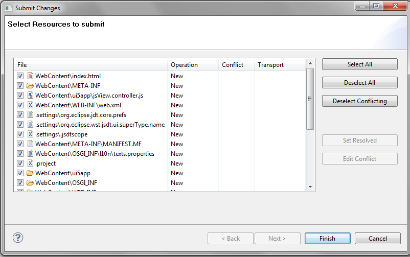

Submitting the SAPUI5 Application Project to the SAPUI5 Repository
Before submitting, make sure that
-
You have created a SAPUI5 application.
-
You have shared your SAPUI5 application project
To submit the SAPUI5 application project to the SAPUI5 repository, proceed as follows:
-
In Eclipse, choose
 Team
Team  Submit
Submit  in the context menu of the selected SAPUI5 application project.
If a logon is required, enter your password in the logon popup and choose
OK.
in the context menu of the selected SAPUI5 application project.
If a logon is required, enter your password in the logon popup and choose
OK. If you submit changes of a SAPUI5 application project, the SAPUI5 runtime library version of the server is compared against the versions which have been installed in Eclipse. A warning is shown, if they do not match.
-
Select all files. You get a list of files that have been modified (added, updated, or deleted) in the client. The dialog shows the files for which submit conflicts exist, for example, if another user has submitted a newer file version in the meantime. Submit conflicts must be resolved before submission. If a file is already locked in a transport request, the corresponding request is shown in the dialog. If the SAPUI5 BSP application belongs to a transportable ABAP package, you have to choose a transport request. Note that transport requests are not automatically released when the files are submitted; you still have to release them using transaction SE09 in the underlying ABAP system.

- Choose Finish.
All files have been submitted to the SAPUI5 Repository and are available under the corresponding SAPUI5 BSP application. The SAPUI5 application project can now be run from a Web browser calling the underlying ABAP system. You have the convenient option in the context menu for an HTML page of starting a browser with the correct URL from the BSP application displayed in the ABAP Workbench (SE80).
If you use the team provider, the file type is determined based on the Eclipse
preferences. If you submit binary files and the submit fails with an "End of line
marker not supported" error, the binary file type is probably not registered as
binary. To change that in Eclipse, choose Window Preferences and then Team File Content and register the binary file type as type "binary".
If you switch the file type of an uploaded file, delete the file and submit, then change the file type and finally create it new and submit the new file.